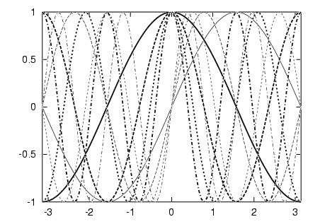
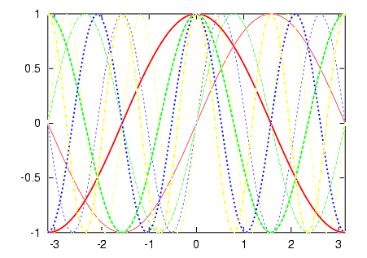
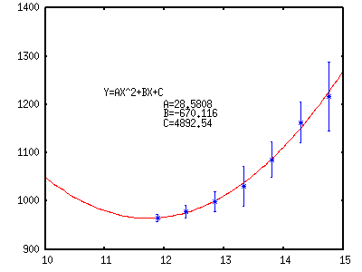

- not so Frequently Asked Questions -
update 2007/ 9/24
|
|
- not so Frequently Asked Questions - update 2007/ 9/24
|
|
not so FAQ |
Miscellaneous Stuff (No.4)How do I make a figure with many kinds of lines ?The number of line-kinds gnuplot can handle depends on the terminal. Lines in a graph you can distinguish by Line Type (solid, dotted, dot-dashed) Thickness (heavy, light) Colors Lines with Symbols Some terminal cannot draw a dotted line, and some cannot change the thickness. Then the number of possible combination is limited. The following explanation is to use many kinds of lines in the postscript terminal. Define the linetype by set linestyle command. If you are using gnuplot ver.4, use set style line instead. Here we use 4 line-types, those are the solid, dashed, dotted, and dot-dashed lines. The IDs of 1, 2, 3, and 6 are assigned for them in the postscript terminal. With those line-types, we use thick (width 3) and thin (width 1) lines for each of them. We get 8 line-kinds now.
gnuplot> set term postscript eps enhanced
gnuplot> set linestyle 1 lt 1 lw 1
gnuplot> set linestyle 2 lt 2 lw 1
gnuplot> set linestyle 3 lt 3 lw 1
gnuplot> set linestyle 4 lt 6 lw 1
gnuplot> set linestyle 5 lt 1 lw 3
gnuplot> set linestyle 6 lt 2 lw 3
gnuplot> set linestyle 7 lt 3 lw 3
gnuplot> set linestyle 8 lt 6 lw 3
gnuplot> set xrange [-pi:pi]
gnuplot> plot sin( x) w l ls 1, sin(2*x) w l ls 2, \
sin(3*x) w l ls 3, sin(4*x) w l ls 4, \
cos( x) w l ls 5, cos(2*x) w l ls 6, \
cos(3*x) w l ls 7, cos(4*x) w l ls 8

Maybe you can use more line-kinds by changing the line-type (short dashed, long dashed, etc), but the other lines except for those 4 types are hard to recognize. You should avoid to use several kinds of thickness, because they are indistinguishable in a small figure. The maximal number of line kinds may depend on your figure appearance. Practically, a figure that includes more than 10 lines is impossible. If you really need to use such a many kinds of lines, you should use colors. 
"Lines with Symbols" means to draw a line first, and symbols are overlayed on it in order to distinguish each line. The symbols you can use are circles, triangles, squares, and so on. gnuplot> set linestyle 1 lt 1 lw 3 pt 5 gnuplot> set linestyle 2 lt 1 lw 3 pt 6 The linestyles are defined above, and they are used at plotting plot sin(x) w linespoints ls 1. With this method it is sometimes difficult to control an interval of each symbol. When you plot a figure in your datafile, the symbol is placed at the data point, and each data point is connected by a straight line. In the case of function plot just like above, those symbols are placed at a fixed interval which is defined by set sampling .  Write least-squares parameter values in the figureMake a figure label which tells you a value of parameter obtained at the least-squares fitting. First, use fit command to get the solution, and set label "A=%g",a substitutes the value of "a" into the format place with the specified format. gnuplot> f(x)=a*x*x+b*x+c gnuplot> fit f(x) 'test.dat' using 1:2:3 via a,b,c gnuplot> set label 1 "Y=AX^2+BX+C" at 11,1225 gnuplot> set label 2 "A = %g", a at 12,1200 gnuplot> set label 3 "B = %g", b at 12,1180 gnuplot> set label 4 "C = %g", c at 12,1160 gnuplot> plot f(x),'test.dat' using 1:2:3 with yerr 
from Joerg in Switzerland. Thanks !
|